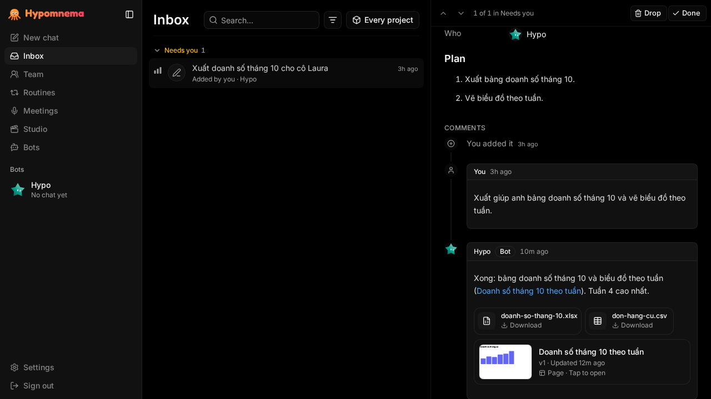
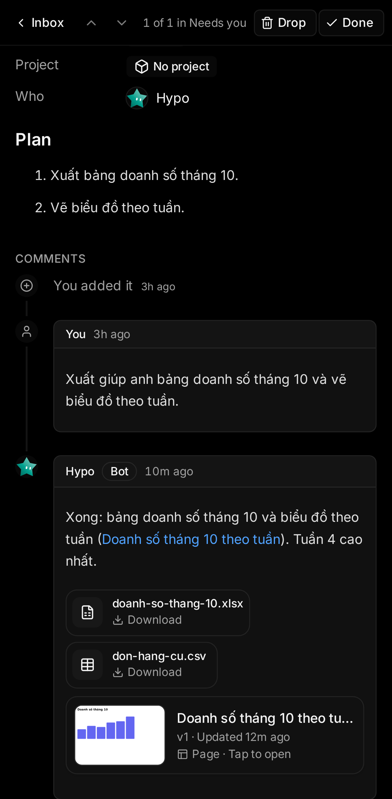
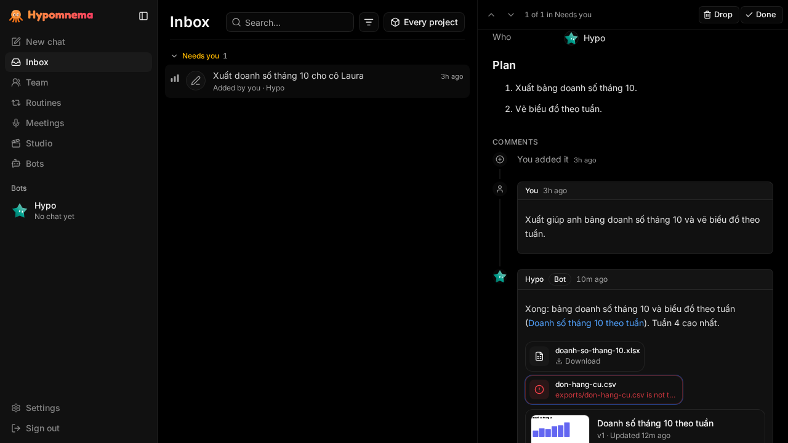
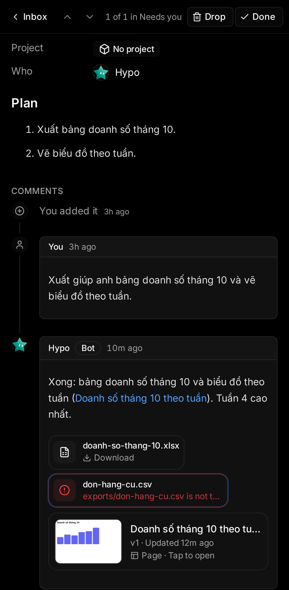

The Bot's comment carries its export as the chat's file chips (ReplyFiles) and its chart as the chat's Artifact card (ArtifactCard); the Artifact's id in the text reads as its title and links to its page.



